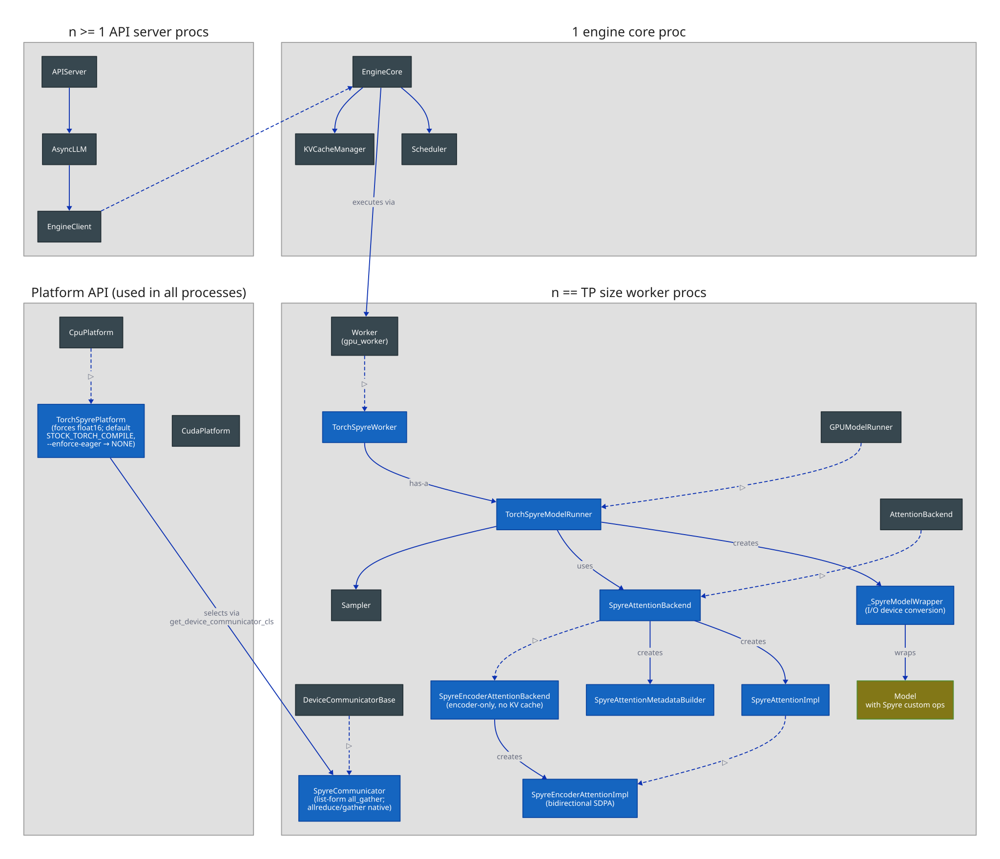
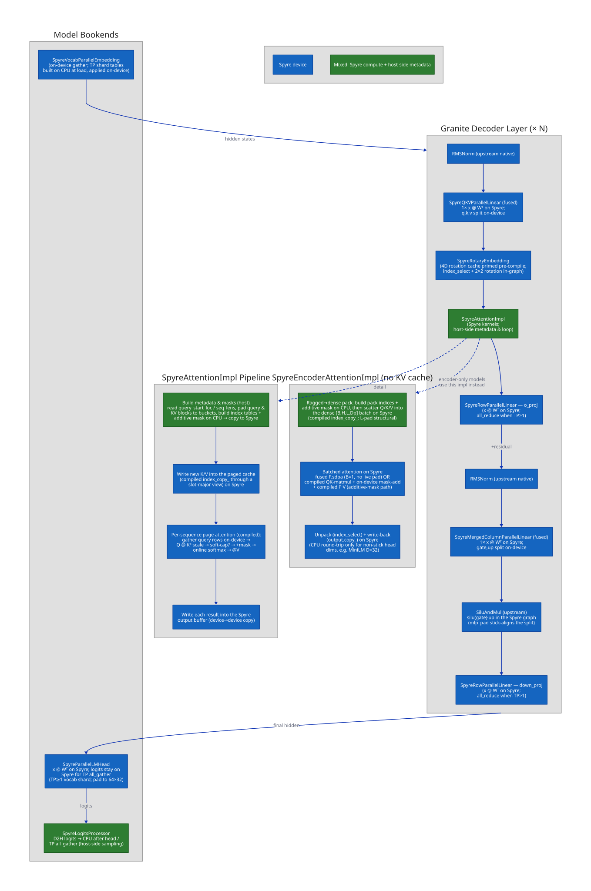

Plugin Architecture¶
spyre-inference is a vLLM out-of-tree (OOT) platform plugin that enables inference on
IBM's Spyre AI accelerator. It integrates with vLLM's plugin system to replace key
compute layers with Spyre-optimized implementations while preserving the rest of the
vLLM execution pipeline.
System Overview¶
The diagram below shows how spyre-inference fits into vLLM's process architecture.
Blue boxes are Spyre-specific classes provided by this plugin; dark boxes are vLLM base
classes; the gold box is the model loaded from vLLM's model registry with Spyre custom
ops injected via OOT registration.

The plugin registers via three entry points:
| Entry Point | Target | Purpose |
|---|---|---|
vllm.platform_plugins |
spyre_inference:register |
Registers TorchSpyrePlatform — sets dtype, worker class, attention backend, and distributed backend |
vllm.general_plugins |
spyre_inference:register_ops |
Calls register_all() — importing the ops package triggers every @register_oot() layer swap, and register_all() additionally registers the opaque spyre_rope_rot and spyre_convert custom ops |
vllm.general_plugins |
spyre_inference:register_hf_adapters |
Overrides vLLM's TransformersForCausalLM with HfAdaptersForCausalLM so model_impl="transformers" uses hf-adapters (matmul-based RoPE) on Spyre |
vLLM is built from source with VLLM_TARGET_DEVICE=empty (no device-specific C
kernels), so the platform overrides a few CPU-backend assumptions: import_kernels() is
a no-op (there is no vllm._C), and the model runner reimplements the slot-mapping
kernel in pure PyTorch.
Component view of a Granite model¶

Custom Op Replacement¶
Each layer that requires Spyre-specific handling is replaced via vLLM's
@ClassName.register_oot() decorator. Most replacements are pure class swaps that run
when the ops package is imported; two layers (rotary embedding, the convert helper)
also register an opaque custom op via register_all() — spyre_convert keeps device
transfers invisible to torch.compile, and spyre_rope_rot keeps the forward-context
read of the gathered rotation slice out of the compiled graph.
| vLLM Layer | Spyre Replacement | Device | Notes |
|---|---|---|---|
RMSNorm |
SpyreRMSNorm |
Spyre | forward_oot runs a maybe_compiled kernel directly on Spyre; no float32 promotion (torch-spyre limitation) |
RotaryEmbedding, Llama3RotaryEmbedding |
SpyreRotaryEmbedding, SpyreLlama3RotaryEmbedding |
Spyre (index_select on CPU) |
2×2 rotation-matrix formulation runs on Spyre; only the frequency-cache index_select (gather_rotation) runs on CPU before the forward, then the gathered slice is moved to Spyre and read back through the opaque spyre_rope_rot op. Only neox-style full rotary is supported (other configs raise NotImplementedError at construction) |
VocabParallelEmbedding |
SpyreVocabParallelEmbedding |
CPU → Spyre | The weight is pinned to CPU (_apply is a no-op — F.embedding has no Spyre kernel), so the gather runs CPU-to-CPU on the CPU-converted input; TP shard mask is computed on CPU (Spyre inductor rejects int64 constants); only the gathered output is converted back to Spyre; all_reduce when TP>1 |
ColumnParallelLinear, MergedColumnParallelLinear, QKVParallelLinear, RowParallelLinear, ReplicatedLinear |
SpyreColumnParallelLinear, SpyreMergedColumnParallelLinear, SpyreQKVParallelLinear, SpyreRowParallelLinear, SpyreReplicatedLinear |
Spyre | All five swap in SpyreUnquantizedLinearMethod (the transposed-weight fast path below). SpyreQKVParallelLinear additionally asserts gather_output=False; SpyreRowParallelLinear (o_proj, down_proj) inherits upstream's all_reduce when reduce_results=True under TP>1 |
SiluAndMul |
SpyreSiluAndMul |
Spyre | forward_oot runs a torch.compiled forward_native directly on the fused [..., 2*d] tensor; the gate/up slice stays on Spyre (indirect access, no CPU detour) |
ParallelLMHead |
SpyreParallelLMHead |
Spyre → CPU | TP≥1 with vocab sharding; per-rank weight padded to a multiple of 64×32; logits returned on CPU for the downstream TP all_gather |
LogitsProcessor |
SpyreLogitsProcessor |
— | Makes logits contiguous — the downstream in-place logits *= scale otherwise trips a torch-spyre compile issue |
Transposed linear weights¶
F.linear(x, W) computes x @ Wᵀ however W is laid out, and on Spyre that transposed
matmul is ~3.5× slower than a plain x @ A
(torch-spyre#3512).
SpyreUnquantizedLinearMethod (custom_ops/linear.py) closes that gap in two overrides:
process_weights_after_loadingreplaces the loaded[out, in]weight with a contiguous[in, out]Wᵀ, so the transpose is paid once at load time rather than every forward.applyrunsspyre_linear_t—torch.matmul(x, Wᵀ)plus optional bias — instead ofF.linear.
The five linear subclasses install it in __init__, but only when quant_method is an
UnquantizedLinearMethod; quantized layers keep their own method and the slower
F.linear path. This is the pure-PyTorch equivalent of torch-spyre's [1,0] weight
layout, which only fires for nn.Linear and so misses every vLLM parallel-linear.
SpyreParallelLMHead stores its own padded_weight_t for the same reason and reuses
spyre_linear_t, so the fast path is defined once.
Fused projections stay fused. SpyreQKVParallelLinear returns the whole [..., q+k+v]
tensor and the unmodified upstream idiom q, k, v = qkv.split(...) slices it, exactly as
SpyreMergedColumnParallelLinear's [..., 2*d] output feeds SpyreSiluAndMul, which
slices gate/up on-device. Earlier revisions instead split the QKV weight on CPU at load
time into three per-part GEMMs — a SplitQKV container built by an analyze_and_unfuse
pass — so that no fused output ever had to be sliced; one fused GEMM is faster than three,
so that pass is gone. The remaining slicing constraint is narrower than it was and lives
in the attention backend, where offset > 0 views still corrupt on transfer (see
Attention Backend).
Attention Backend¶
The SpyreAttentionBackend implements paged attention using pure PyTorch operations
(no custom CUDA kernels). The KV cache is one dense tensor per layer on Spyre,
[num_blocks, block_size, num_kv_heads, head_size] — the shape
SpyreAttentionBackend.get_kv_cache_shape advertises. It runs a FlashAttention-style
online softmax that iterates over pages without any compact-gather step, reading each
page by indexing the dense tensor with a one-element int32 device tensor (an indirect
access, so the compiled bundle carries a real index rather than a constant slice) and
permuting the token-major page to head-major on device before the matmuls. The cache is
allocated with the slot axis outermost in the device layout (slot_major_kv_layout) so
the write can scatter through a slot-major view of it:
| Step | Device | Operation |
|---|---|---|
| 1. q → CPU | CPU | Bring q to CPU when its layout cannot be assembled on device; k/v stay put |
| 2. Reshape & cache | Spyre | Scatter new K/V into the cache through a slot-major view: a token's destination is one index, so it is a single index_copy_ per tensor |
| 3. Per-sequence varlen loop | CPU | Iterate sequences via query_start_loc, pad query_len to 32 |
| 4. Online softmax over pages | Spyre | Compiled per (num_blocks, padded_query_len) kernel: Q @ Kᵀ · scale → optional soft-cap → + tile_mask → online softmax → @ V |
| 5. Write-back | CPU → Spyre | Stage each sequence's result into a CPU buffer, then one bulk copy into the Spyre output (per-token spyre.overwrite scatter doesn't scale) |
Key constraints:
- KV length alignment: 256 tokens (avoids per-step recompilation on Spyre)
- Query chunk size: 32 tokens (consistent tensor shapes for compilation)
- Head size: Must be a multiple of 64 (128-byte Spyre stick ÷ 2-byte float16)
- Block size: Must be a multiple of 64; the platform rounds a user-supplied
block_sizeup to the next multiple of 64 automatically - GQA only: MHA (
num_queries_per_kv = 1) currently fails in the Spyre compiler's layout-propagation pass; only GQA configurations are exercised today - Supported: sliding-window masking and logits soft-capping are both handled; ALiBi slopes are not
Encoder-only attention¶
Encoder-only (embedding) models take a separate path. For ENCODER/ENCODER_ONLY
layers, TorchSpyrePlatform.get_attn_backend_cls selects SpyreEncoderAttentionBackend
→ SpyreEncoderAttentionImpl (both subclass the decoder backend/impl in
spyre_encoder_attn.py). This path has no KV cache — attention is bidirectional over
the full sequence — so it skips the paged-cache machinery entirely and instead:
- Assembles a dense, padded batch on CPU (per-sequence variable-length slice, transpose,
and scatter of ragged Q/K/V into
[num_seqs, H, L, D], plus an additive attention mask). Both sequence lengthLand head dimDare padded to theENCODER_SEQ_ALIGNMENT = 64stick so the on-device matmuls stay stick-aligned (this is what lets small-head-dim models like MiniLM'shead_size=32compile). - Runs a single batched
F.scaled_dot_product_attentionon Spyre (is_causal=False, additive mask,enable_gqawhennum_kv_heads != num_heads). - Scatters the unpadded results back to CPU, then writes them per token into the Spyre output buffer.
Device Placement Strategy¶
TorchSpyreModelRunner inherits from vLLM's GPUModelRunner and treats Spyre as the
"GPU" in the CpuGpuBuffer pattern. Buffers are created via a SpyreCpuGpuBuffer
override:
- Float dtypes:
.cpuon CPU (numpy staging for the scheduler),.gpuon Spyre asfloat16 - Int / bool dtypes:
.gpualiased to.cpu(Spyre doesn't natively support these)
self.device stays cpu so that scatter, indexing, and block-table ops run on CPU, but
float compute tensors land on Spyre via self._spyre_device. Because there is no
vllm._C under VLLM_TARGET_DEVICE=empty, the runner also swaps in a pure-PyTorch
_compute_slot_mapping implementation for the paged-cache slot mapping.
At load time, load_model moves every module except Attention scale buffers onto Spyre.
The weight transposes happen before that, in each layer's
process_weights_after_loading, while the weights are still on CPU.
_SpyreModelWrapper sits between the model runner and the model and converts at the
call boundary:
- Input: CPU
int32/int64tensors → Spyreint64(for embedding lookup) - Output: Spyre
float16tensors → CPU (for logits indexing and sampling) compute_logits: moves the CPU-slicedhidden_states[logits_indices]back onto Spyre for theSpyreParallelLMHeadmatmul, which then returns logits on CPU
SpyreVocabParallelEmbedding inherits weight loading and shard arithmetic from upstream
and overrides forward to compute the TP shard mask on CPU (the upstream helper does
int64 comparisons against Python int constants, which the Spyre inductor backend
rejects). Because F.embedding has no Spyre kernel, its _apply override is a no-op
that pins the weight to CPU: the input is converted to CPU, the gather runs
CPU-to-CPU, and only the gathered output is converted back to Spyre. This replaces the
earlier silent D2H/H2D CPU fallback of aten.embedding
(torch-spyre#420), which
copied the full [vocab, hidden] weight on every decode step.
Hidden states flow on Spyre between decoder layers, with CPU round-trips only for
operations that Spyre doesn't yet support natively (the embedding gather, the rotary
frequency-cache index_select, q/k/v slicing, the per-sequence attention varlen loop,
logits indexing).
HF-adapters Transformers backend¶
When model_impl="transformers", the register_hf_adapters general plugin swaps vLLM's
TransformersForCausalLM for HfAdaptersForCausalLM (spyre_inference/hf_adapters.py).
vLLM's stock Transformers backend still handles model creation, weight loading, attention
routing, the KV cache, and scheduling; the Spyre OOT layers above apply automatically at
instantiation. The adapter's main job is to replace HF's RotaryEmbedding with a
matmul-based RoPE (apply_rope_matmul), padding Q/K into a stick-aligned dimension for
the rotation when head_dim/2 is not a multiple of the Spyre block size and contracting
back afterward.
Distributed (TP)¶
TorchSpyrePlatform.get_device_communicator_cls returns SpyreCommunicator, a
DeviceCommunicatorBase override in
spyre_inference/distributed/spyre_communicator.py. The installed libspyre_comms.so
now implements barrier, broadcast, send/recv, list-form allgather, gather,
and allreduce; only reduce remains a throw-stub, and torch-spyre's spyreccl
backend still stubs _allgather_base (so dist.all_gather_into_tensor doesn't work).
SpyreCommunicator therefore only overrides:
all_gather— routes CPU tensors through the gloo half of the multi-backendcpu:gloo,spyre:spyrecclgroup, and uses native list-formdist.all_gatherfor Spyre tensors (the base class'sdist.all_gather_into_tensorpath is blocked by the_allgather_basestub).reduce_scatter— raises; it is not on the TP forward path.
all_reduce and gather are no longer overridden — they now work natively via
libspyre_comms. Each remaining fallback is
tagged REPLACE-WITH-NATIVE; the tests/test_spyre_comms_native_probes.py xfail-strict
suite is the canonical signal: when a probe flips green, delete the corresponding
override.
The worker (TorchSpyreWorker) inherits directly from vLLM's Worker (gpu_worker), not
CPUWorker — Spyre needs none of the CPU-specific init (NUMA binding, host-RAM
profiling). Data parallelism (data_parallel_size > 1) is rejected in
check_and_update_config.